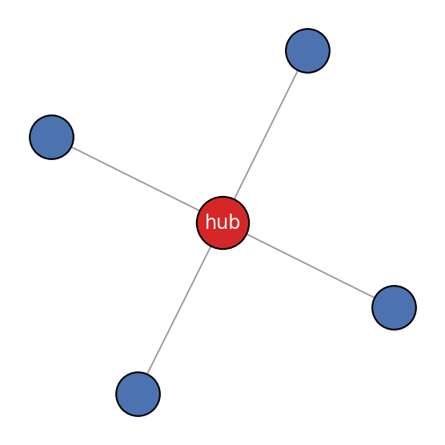
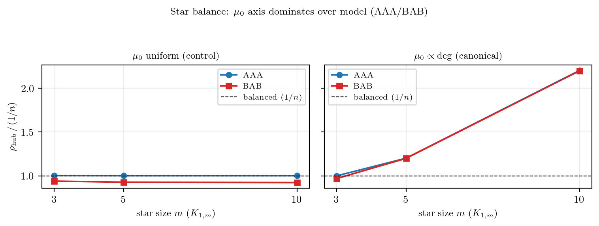

연구 ▷ HST ▷ Star graph에서 balance를 가르는 건 AAA/BAB보다 μ₀다
Author
소미
Published
May 30, 2026
Star graph \(K_{1,m}\) — 허브 하나에 잎(leaf) \(m\) 개가 매달린 가장 비대칭적인 그래프 — 는 HST의 “balance” 직관을 시험하기 좋다. 잎은 차수 1, 허브는 차수 \(m\). 직관적으로는 허브가 과방문될 것 같다. 실제로 HST(Model AAA)에서 star의 장기 방문률 \(\rho_i\)는 어디로 갈까?
미리 결론부터: 갈림길은 snowfall A/B(=AAA vs BAB)나 \(T_{\max}\)가 아니라, fall 분포 \(\mu_0\)다. 같은 star·같은 AAA라도 \(\mu_0\)를 균등으로 두면 \(1/n\) balanced로, 정본 차수비례(degree-proportional)로 두면 큰 star에서 허브 과방문(drift)으로 간다.
먼저 용어를 분리해 둔다 (HST에는 “uniform/균등”이 여러 군데 나와 헷갈리기 쉽다):
fall 분포 \(\mu_0\): fall 때 walker를 새로 뽑는 분포. 본 글의 주인공. 정본 디폴트는 \(\mu_0\propto\deg\) (차수비례), 비교군으로 균등 \(\mu_0=(1/n,\dots,1/n)\).
snowfall\(b'\sim\mathrm{Unif}(0,b)\): 매 step 쌓는 눈의 양.
block timer\(T_{\max}\sim\mathrm{Unif}\{n,\dots,2n\}\) (AAA) 또는 고정(BAB).
실험 대상 — Star \(K_{1,m}\)
Code
import networkx as nximport matplotlib.pyplot as pltG=nx.star_graph(4)pos=nx.spring_layout(G, seed=1)fig,ax=plt.subplots(figsize=(3.2,3.0))nx.draw_networkx_edges(G,pos,ax=ax,width=0.7,edge_color='#999999')nx.draw_networkx_nodes(G,pos,ax=ax,nodelist=[0],node_size=600,node_color='#d62728',edgecolors='k',linewidths=0.8)nx.draw_networkx_nodes(G,pos,ax=ax,nodelist=list(range(1,5)),node_size=420,node_color='#4c72b0',edgecolors='k',linewidths=0.8)nx.draw_networkx_labels(G,pos,ax=ax,font_size=9,font_color='white',labels={0:'hub'})ax.set_axis_off(); ax.set_aspect('equal'); fig.tight_layout(); plt.show()

Star \(K_{1,4}\) — 허브(가운데, 차수 4) + 잎 4개(차수 1).
실험 — \(\mu_0\)(균등 vs 차수비례) × model(AAA/BAB)
walker 규칙은 공통이다 — fall(낙하, \(\mu_0\)로 새 위치) → flow(downstream-filter: \(h(X)\ge h(y)\)인 이웃으로만) → 내려갈 곳 없으면 block(제자리). 잎은 차수 1이라 이웃이 허브뿐이므로, 허브가 더 높으면 잎은 항상 block한다. AAA는 snowfall·\(T_{\max}\)가 매번 새로, BAB는 라운드별 고정. 노드 \(i\)의 방문률 \(\rho_i=\frac1t\sum_{s\le t}\mathbf 1\{X_s=i\}\)를 잰다.
Code
import numpy as npB=0.05; T=500_000def star(m): n=m+1; W=np.zeros((n,n))for i inrange(1,n): W[0,i]=W[i,0]=1.0return Wdef run(W, T, model, mu0_mode, seed, fixed_mf=None): n=W.shape[0]; deg=W.sum(1) mu0 = np.ones(n)/n if mu0_mode=="uniform"else deg/deg.sum() nb=[np.where(W[i]>0)[0] for i inrange(n)] rng=np.random.default_rng(seed); h=np.zeros(n); visit=np.zeros(n,np.int64) sfA=(model[0]=="A"); tmA=(model[2]=="A") draw=lambda: int(rng.integers(n,2*n+1)) if tmA else (fixed_mf or2*n) mf=draw(); Z=mf; X=0; b_round=float(rng.uniform(0,B))for t inrange(T): b_step=float(rng.uniform(0,B)) if sfA else b_roundif Z>=mf: mf=draw(); b_round=float(rng.uniform(0,B))ifnot sfA: b_step=b_round X=int(rng.choice(n,p=mu0)); h[X]+=b_step; Z=0else: nbr=nb[X]; down=nbr[h[nbr]<=h[X]]iflen(down)>0: w=W[X,down]; X=int(rng.choice(down,p=w/w.sum())); h[X]+=b_step; Z+=1else: h[X]+=b_step; Z=mf visit[X]+=1 rho=visit/visit.sum()return rho[0], rho[1:].mean()rows=[]for m in [3,5,10]: W=star(m); n=m+1for mu0_mode in ["uniform","degprop"]:for model in ["AAA","BAB"]: rh,rl=run(W,T,model,mu0_mode,seed=0,fixed_mf=2*n) rows.append((m,n,mu0_mode,model,rh,rl,1/n))print(f"K(1,{m:2}) μ0={mu0_mode:8}{model}: ρ_hub={rh:.4f} ρ_leaf={rl:.4f} (1/n={1/n:.4f}) hub/[1/n]={rh*n:.2f}")
균등 \(\mu_0\)에서 AAA의 ρ_hub는 정확히 \(1/n\) (hub/[1/n]≈1.0)이다. 차수비례 \(\mu_0\)에서는 큰 star(\(m\ge5\))의 ρ_hub가 \(1/n\)을 크게 웃돈다.
Code
import matplotlibmatplotlib.rcParams["text.usetex"]=True; matplotlib.rcParams["font.family"]="serif"ms=[3,5,10]fig,axes=plt.subplots(1,2,figsize=(8,3.0),sharey=True)for ax,(mode,title) inzip(axes,[("uniform",r"$\mu_0$ uniform (control)"),("degprop",r"$\mu_0\propto\deg$(canonical)")]):for model,col,mk in [("AAA","#1f77b4","o"),("BAB","#d62728","s")]: yv=[[r[4]*r[1] for r in rows if r[0]==m and r[2]==mode and r[3]==model][0] for m in ms] ax.plot(ms,yv,"-"+mk,color=col,ms=5,label=model) ax.axhline(1.0,color="k",lw=0.8,ls="--",label=r"balanced ($1/n$)") ax.set_xlabel(r"star size $m$($K_{1,m}$)",fontsize=9); ax.set_title(title,fontsize=9) ax.set_xticks(ms); ax.legend(fontsize=7.5); ax.grid(alpha=0.25)axes[0].set_ylabel(r"$\rho_{\mathrm{hub}}\,/\,(1/n)$",fontsize=9)fig.suptitle(r"Star balance: $\mu_0$ axis dominates over model (AAA/BAB)",fontsize=9.5)fig.tight_layout(rect=[0,0,1,0.93]); plt.show()

ρ_hub / (1/n) 비율: 1이면 balanced. 왼쪽(μ₀ 균등): AAA가 모든 크기에서 ≈1 (balanced). 오른쪽(μ₀ 차수비례, 정본): 큰 star에서 허브 과방문(>1, drift). AAA/BAB 차이는 μ₀ 효과보다 훨씬 작다.
왜 그런가 — 잎의 차수 1 + fall mass
차수비례 \(\mu_0\)에서 허브의 fall 확률은 \(\mu_0(\text{hub})=\deg(\text{hub})/\sum\deg = m/(2m)=1/2\) — star 크기 \(m\)과 무관하게 항상 1/2다. 한편 잎(차수 1)은 이웃이 허브뿐이라, 허브가 더 높으면 downstream이 비어 항상 block한다(잎→허브 flow가 안 일어남). 큰 star에서는 이 “잎 항상 block”이 100%가 되어, 허브는 오직 fall로만 방문된다. 따라서
크기·\(T_{\max}\)·\(b\)와 무관하게 약 \(0.2\)로 saturate한다 (잎은 나머지 \(0.8/m\)). 반면 균등 \(\mu_0\)에서는 허브 fall 확률이 \(1/n\)으로 떨어지고 “잎 항상 block”도 완화되어(잎→허브 flow 부활), height-driven leveling이 정확히 \(\rho_i=1/n\)을 만든다.
이는 Wheel과 대비된다 — Wheel의 rim은 차수 3이라 rim끼리 flow가 차수비례 bias를 씻어내 차수비례 \(\mu_0\)에서도 \(1/n\)로 간다. Star의 잎은 차수 1이라 그 세탁이 없어 \(\mu_0\)가 그대로 드러난다.
정리
balance를 가르는 1차 축은 \(\mu_0\)다. 정본(차수비례)에서 큰 star는 \(1/n\)이 아니라 허브 과방문(drift)이고, 균등 \(\mu_0\)에서만 AAA가 \(1/n\) balanced로 간다.
AAA/BAB(snowfall·\(T_{\max}\)) 차이는 부차적이다. 균등 \(\mu_0\)에서 BAB는 허브를 오히려 약간 낮추는 방향(\(0.84\text{–}0.94\times 1/n\))이라, “허브 과방문”과 반대다.
따라서 star는 “AAA가 항상 uniform balance를 만든다”의 증거가 아니라, \(\mu_0\) 선택이 regime(balanced↔︎drift)을 바꾼다는 좋은 예시다.
Note(각주) 옛 \(H=1/3,\ L=2/9\) 기록에 대하여
이전 BAB/Model-B 계열 기록에 star \(S_4\)가 \(\rho_{\mathrm{hub}}=1/3,\ \rho_{\mathrm{leaf}}=2/9\) strict-drift로 남아 있었으나, 현재 정본(downstream-filter + block-stay) 재실험에서는 차수비례 \(\mu_0\)\(S_4\)가 \(\rho_{\mathrm{hub}}=0.25=1/n\)로, 큰 star라야 \(\approx0.2\)가 나온다 — \(1/3\)은 어느 model/\(\mu_0\)로도 재현되지 않았다. old convention / 다른 \(T_{\max}\)·block 정의 / round counting 차이 중 하나로 보이며, 현재 정본 결론으로 쓰지 않는다.